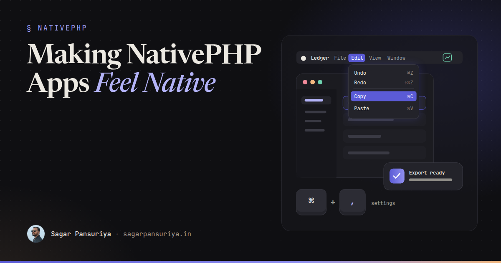
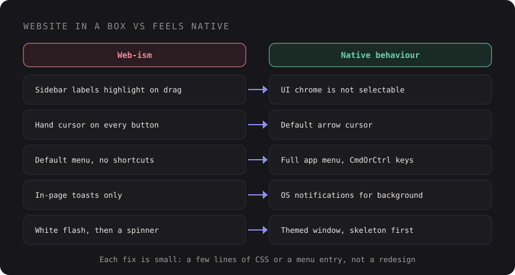

Making a NativePHP Desktop App Feel Native, Not Like a Website in a Box


Picture opening a new desktop app for the first time. The window appears, and something feels off
before you can say why. You drag across the sidebar and the labels highlight in blue. Buttons turn the
cursor into a pointing hand. Cmd+, does nothing. The app has no menu apart from the
default one. It's a website in a box, and your fingers notice before your brain does.
NativePHP makes it genuinely easy to ship a Laravel app to the desktop. That ease is also the trap: it's just as easy to ship your web UI unchanged and call it a desktop app. Users won't file a bug that says "this feels like a website". They'll just trust it a little less and use it a little less.
This post is the checklist I'd work through to close that gap: menus and shortcuts, tray apps, windows, notifications, OS conventions, offline states, startup time, and the small web-isms that give the game away.
Where the "website in a box" feeling comes from
Almost none of it is about looks. A desktop app can be beautifully designed and still feel wrong, because the feeling comes from behaviour. Native apps share a set of conventions that users have absorbed over decades, and web pages break most of them by default.

The good news is that each of these is small. None of them needs a redesign. Let's go through them.
1. A real application menu and keyboard shortcuts
On macOS the menu bar is the first thing power users reach for, and on Windows and Linux the same
commands are expected in the window's menu. NativePHP lets you define the application menu from PHP,
usually in the boot() method of your NativeAppServiceProvider. The builder API
has changed between releases, so follow the menu section of the NativePHP
docs for your version. What matters here is what you put in it:
- Keep the standard menus. Edit (undo, redo, cut, copy, paste, select all), View and Window. Without an Edit menu, copy and paste can behave oddly in text fields on macOS, because those shortcuts are wired through menu roles.
- Add your app's real commands, each with a shortcut. Every important action in your UI should also live in the menu, where users go to discover what the app can do.
- Use platform-aware accelerators. Electron-style accelerators such as
CmdOrCtrl+Nmap toCmdon macOS andCtrlelsewhere, so one definition works on every platform.
Don't invent shortcuts where conventions already exist:
| Action | macOS | Windows / Linux |
|---|---|---|
| New item | Cmd+N | Ctrl+N |
| Settings | Cmd+, | Usually a menu item, often Ctrl+, |
| Close window | Cmd+W | Ctrl+W |
| Quit | Cmd+Q | Alt+F4 or a File menu item |
| Find | Cmd+F | Ctrl+F |
Then make the shortcuts work inside the UI too. A list you can move through with arrow keys,
Enter to open and Esc to dismiss feels native. A list you can only click does
not.
2. Tray and menu bar apps, when they fit
Some apps don't deserve a big window at all. A timer, a clipboard tool, a status monitor or a quick-capture inbox is better as a menu bar app on macOS or a tray icon on Windows. NativePHP supports this through its menu bar API, where a small window is attached to the icon and opens when you click it.
A few rules make these feel right:
- Use a monochrome, template-style icon on macOS so it adapts to light and dark menu bars.
- Close the popover when it loses focus. That's what every other menu bar app does.
- Keep the window small and fast. If it needs scrolling and tabs, it probably wants to be a normal window instead.
- Offer "Open at login" as a setting, off by default, rather than deciding for the user.
3. Windows that behave like windows
Web apps think in routes. Desktop apps think in windows. Settings, for example, is conventionally its own small window, not a route that replaces your main view:
// Window facade from your NativePHP package (namespace varies by version)
Window::open('settings')
->route('settings')
->title('Settings')
->width(640)
->height(480);Give every window a sensible default size and a minimum size, so the layout never collapses into something broken. Remember window size and position between launches; nothing says "website" like an app that forgets you resized it. Check the window docs for the options your NativePHP version offers for this, or persist the bounds yourself.
If you hide the native title bar for a custom header, you take on the job of making that header draggable and leaving room for the window controls. In the Electron runtime, dragging is done in CSS:
.titlebar {
-webkit-app-region: drag; /* the whole bar moves the window */
padding-left: 80px; /* room for macOS traffic lights */
}
.titlebar button,
.titlebar input {
-webkit-app-region: no-drag; /* but controls must stay clickable */
}Honestly, unless you have a strong design reason, keep the native title bar. It's the one piece of chrome that's guaranteed to behave correctly on every OS.
4. Native notifications instead of toasts
An in-page toast only helps if the user is looking at your window. For anything that happens in the background (an export finished, a sync failed, a reminder is due), use an OS notification. It shows up in the notification centre, respects Do Not Disturb, and works when your app is hidden:
Notification::title('Export ready')
->message('orders-2026-11.csv has been saved to Downloads.')
->show();Keep toasts for immediate feedback on something the user just did in the window. Use notifications for things that happened while they were elsewhere. And be stingy: an app that notifies too often gets its notifications turned off, for good.
5. Respect the OS: theme, fonts and controls
Your app should look like it belongs on the machine it's running on, which mostly means following the system rather than overriding it.
:root {
color-scheme: light dark; /* native form controls and scrollbars follow the theme */
font-family: system-ui, -apple-system, "Segoe UI", sans-serif;
font-size: 13px; /* desktop UI text is denser than a marketing page */
}
@media (prefers-color-scheme: dark) {
:root { --surface: #1e1e22; --text: #e8e6e1; }
}
:focus-visible {
outline: 2px solid AccentColor; /* system accent where supported */
outline-offset: 2px;
}- Dark mode should follow the system by default, with an optional override in settings.
prefers-color-schemeupdates live when the user switches their OS theme. - System fonts make your UI match every other app. A brand font in headings is fine; using it for every label and menu is where it starts to feel like a web page.
- Density matters. Desktop users expect tighter spacing and smaller type than a mobile-first web layout. If you're using Tailwind, a slightly smaller base size and spacing scale for the desktop build goes a long way.
- Test
AccentColorand other CSS system colours in your target runtime before relying on them, and give them a fallback.
6. Remove the web-isms
This is the cheapest section and has the biggest effect. A few lines of CSS remove most of the tells:
/* UI chrome shouldn't be selectable like a document */
.app-chrome, nav, .toolbar, .sidebar, button, label {
user-select: none;
-webkit-user-drag: none;
}
/* ...but content should be */
.content, input, textarea, [contenteditable] {
user-select: text;
}
/* native buttons don't use the hand cursor */
button, [role="button"], .tab {
cursor: default;
}
/* no rubber-band bounce revealing a blank page */
html, body {
overscroll-behavior: none;
}And a few behaviours to review:
- Hover-only affordances. Actions that only appear on hover are fine as shortcuts, but every action must also be reachable from a context menu, the app menu or the keyboard.
- Links that look like links. Inside the app, navigation should look like tabs, sidebar items and buttons. Real external links should open in the user's default browser, not inside your app window.
- Loading spinners on every click. Local data is fast. If a view needs a full-page spinner to show local SQLite data, fix the query, not the spinner.
- Browser-style error pages. A Laravel exception page or a blank white screen in a desktop app is jarring. Catch errors and show an in-app state with a way forward.
7. Offline states and startup time
People open desktop apps on trains, in cafés and in the middle of Wi-Fi outages. An app that shows a connection error on launch feels broken in a way that a website doesn't, because nobody expects a website to work offline. If your app depends on an API, design the offline state on purpose: show cached data, queue changes, and say clearly what's unavailable. I covered the data side of this in offline-first NativePHP apps with SQLite and a sync queue.
Startup is the other first impression. A few things help:
- Show a window with something in it quickly. A skeleton of the real layout beats a blank window, and a blank window beats a white flash.
- Keep boot work light. Don't sync, reindex or call remote APIs before the first view renders. Kick those off after, in the background.
- Match the background colour of the window to your theme so there's no bright flash before the CSS loads, especially in dark mode.
- Measure on a modest machine. Your development laptop is the fastest computer your app will ever run on.
Updates are part of this too. An app that updates itself quietly feels maintained; one that nags with "download the new version from our website" feels abandoned. That's a release pipeline topic, and I wrote about it in shipping NativePHP desktop apps.
The "feels native" checklist
- A full app menu with Edit, View and Window, plus your own commands with shortcuts.
- Standard shortcuts work: new, settings, close, quit, find.
- Keyboard navigation inside lists and dialogs: arrows,
Enter,Esc. - Settings opens as its own window. Windows remember size and position and have minimum sizes.
- Background events use OS notifications, sparingly.
color-scheme,prefers-color-scheme, system fonts and desktop density.user-select: noneon chrome,cursor: defaulton buttons, no overscroll bounce.- No hover-only actions, external links open in the browser, no raw error pages.
- A designed offline state and a fast first paint on a modest machine.
None of this is glamorous, and users will never thank you for it directly. They'll just keep the app in their dock, which is the whole point.
Discussion